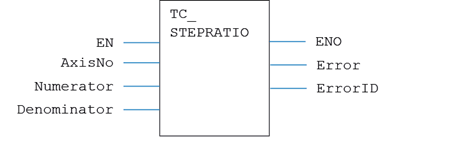
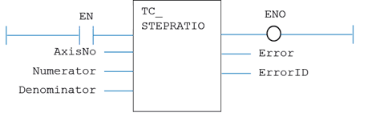

Motion Function
Issues a new STEP_RATIO motion request for the axis specified by 'AxisNo'.
|
EN : BOOL; |
TRUE enables the function |
|
AxisNo : USINT; |
Axis number |
|
Numerator: LINT; |
The output count |
|
Denominator: LINT; |
The DPOS count (input of the function) |
|
ENO : BOOL; |
TRUE when function is enabled |
|
Error : BOOL; |
TRUE if a program error is detected |
|
ErrorID : UINT; |
Returned error number |
When the EN input is TRUE, the function block applies the command to the axis indicated.
A programming error, such as parameter out of range, will set the Error output and return an error ID number. For the Error ID reference, see the Trio Programming error list.
MyTC_StepRatio(EN, AxisNo, Numerator, Denominator);
ENO := MyTC_StepRatio.ENO;
Error := MyTC_StepRatio.Error;
ErrorID := MyTC_StepRatio.ErrorID;

